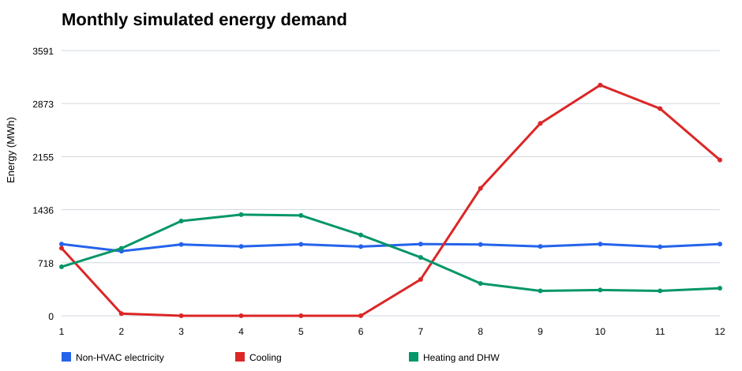
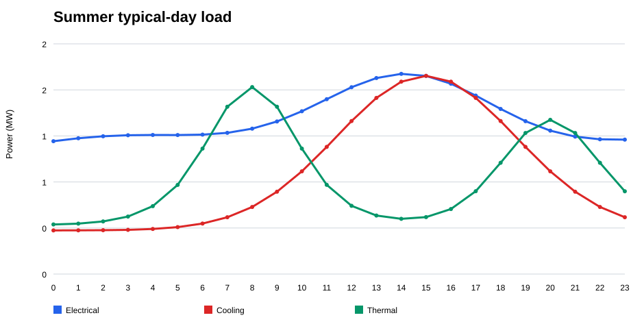
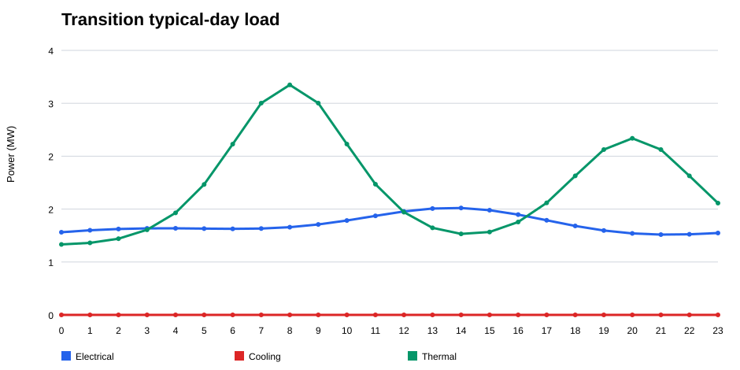
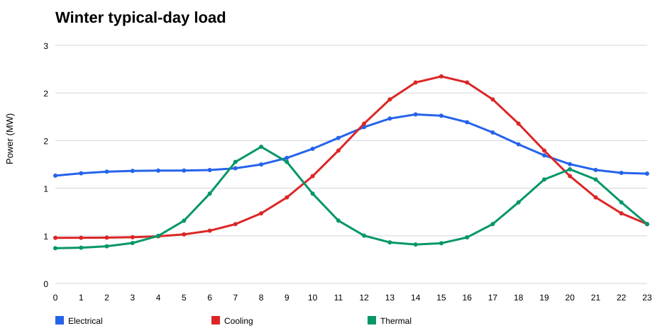
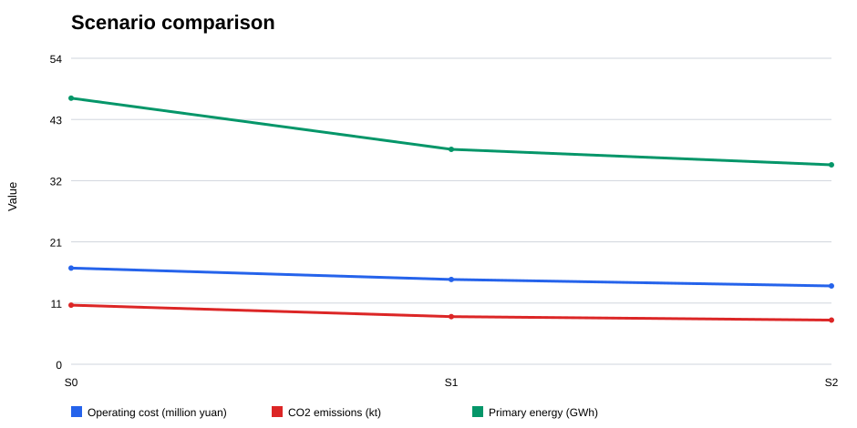

上海 12 万平方米宾馆分布式冷热电联供系统分析
设计阶段情景模拟结果 | 负荷、设备及经济参数均为明确列示的区域平均假设，不能替代实测计量数据。
1. 设计对象与研究边界
设计对象为上海市一座 120000 m2 城市中高端宾馆。模型按 800 间客房、70% 年平均入住率设置。用能边界包括客房、餐饮宴会、前厅会议、后勤办公、厨房洗衣、车库和机电系统。全年模型按 8760 小时运行，并分别形成夏季、过渡季和冬季典型日。
2. 方案结构
S0 为常规分供基准方案；S1 为燃气冷热电联供方案；S2 在 S1 基础上叠加光伏、电池储能和蓄冷，作为多能互补优化方案。
3. 模拟负荷

图 1 逐月模拟能耗。单位：MWh。
计算公式：Em,k = Σ(Pk,t × Δt)，其中 m 为月份，k 为非空调用电、冷负荷或热负荷，Δt = 1 h。

图 2 夏季典型日负荷。单位：MW。
计算公式：Pe,h = Pnon,h + Qc,h / COP；Pc,h = Qc,h；Pth,h = Qth,h。其中 COP = 4.8，取 7 月 22 日 0-23 时数据。

图 3 过渡季典型日负荷。单位：MW。
计算公式：Pe,h = Pnon,h + Qc,h / COP；Pc,h = Qc,h；Pth,h = Qth,h。其中 COP = 4.8，取 4 月 15 日 0-23 时数据。

图 4 冬季典型日负荷。单位：MW。
计算公式：Pe,h = Pnon,h + Qc,h / COP；Pc,h = Qc,h；Pth,h = Qth,h。其中 COP = 4.8，取 1 月 15 日 0-23 时数据。
4. 多情景对比结果
| 方案 | 年购电量 MWh | 年用气量 万m3 | 年运行费用 百万元 | CO2 排放 kt | 一次能源 GWh | 静态回收期 年 |
|---|---|---|---|---|---|---|
| S0 常规分供 | 14275.0 | 103.36 | 16.88 | 10.38 | 46.71 | - |
| S1 冷热电联供 | 6881.1 | 205.36 | 14.88 | 8.36 | 37.73 | 18.0 |
| S2 多能互补 | 6126.1 | 197.36 | 13.74 | 7.76 | 35.01 | 14.0 |

图 5 不同系统方案的模拟结果对比。三个子图分别采用柱状图比较年运行费用、二氧化碳排放和一次能源消耗。
计算公式：C = Σ(Egrid,t × pt) + Vgas × pgas + Com；CO2 = Egrid × EFgrid + Vgas × EFgas；PE = Egrid / ηgrid + Vgas × LHV。每个子图均比较 S0、S1 与 S2 的同一项指标。
结果解读S2 相对 S0 的年运行费用下降 18.6%，CO2 排放下降 25.2%，一次能源消耗下降 25.1%。该结果以假设的电价、气价和设备投资为前提，需在取得实际商务报价后复核。
5. 关键参数敏感性分析
| 参数 | 取值 | S2 年节省运行费 百万元 | S2 静态回收期 年 |
|---|---|---|---|
| 电价 | 基准值 80% | 1.72 | 25.46 |
| 电价 | 基准值 | 3.13 | 14.00 |
| 电价 | 基准值 120% | 4.54 | 9.66 |
| 气价 | 基准值 80% | 3.76 | 11.67 |
| 气价 | 基准值 | 3.13 | 14.00 |
| 气价 | 基准值 120% | 2.51 | 17.50 |
电价是回收期最敏感的参数。电价低于基准值 20% 时，S2 的静态回收期延长至约 25.5 年；气价上升时，燃气联供的经济性也会减弱。因此，正式方案应以项目实际电价类型、需量电费和天然气采购合同为准。
6. 数据使用说明
负荷时序由宾馆典型运行规律、上海季节特征和设计边界构建。原动机采用模块化配置，并按逐时累计负荷进行容量筛选。燃气机组的效率范围和上海饭店项目的运行案例参考《建筑分布式能源系统设计与优化》；课程任务要求和报告章节按课程任务书、设计报告模板执行。